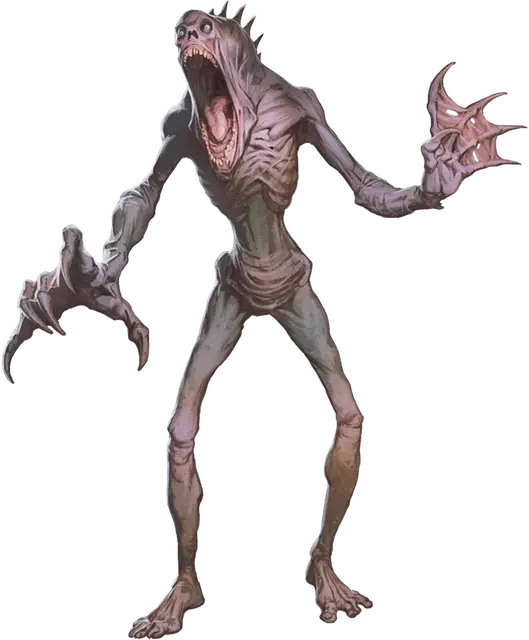

Голодный угнетённый
Hungry Sorrowsworn
Средний Монстр, обычно нейтрально-злой

Класс Доспеха 17 (природный доспех)
Хиты 225 (30к8 + 90)
Скорость 30 футов
| мод | спас | ||
|---|---|---|---|
| СИЛ | 19 | +4 | +4 |
| ЛОВ | 10 | +0 | +0 |
| ТЕЛ | 17 | +3 | +3 |
| мод | спас | ||
|---|---|---|---|
| ИНТ | 6 | −2 | −2 |
| МДР | 11 | +0 | +0 |
| ХАР | 6 | −2 | −2 |
Сопротивление урону дробящий, колющий, рубящий
Чувства тёмное зрение 60 футов, пассивное Восприятие 10
Опасность 11 (7200 опыта)
Бонус мастерства +4
Среда обитания Город, Лес, Подземье
Особенности
Сопротивление. дробящему, колющему и рубящему урону, пока находится в области тусклого света или тьмы.
Жажда жизни. Если существо в пределах 60 футов от угнетённого, восстанавливает хиты, то угнетённый получает два преимущества до конца своего следующего хода: он совершает с преимуществом броски атаки, а его Укус дополнительно наносит 22 (4к10) урона некротической энергией при попадании.
Действия
Мультиатака. Голод совершает одну атаку Укусом и одну атаку Когтями.
Укус. Рукопашная атака оружием: +8 к попаданию, досягаемость 5 футов, одна цель. Попадание: 8 (1к8 + 4) колющего урона, плюс 13 (3к8) урона некротической энергией.
Когти. Рукопашная атака оружием: +8 к попаданию, досягаемость 10 футов, одна цель. Попадание: 18 (4к6 + 4) рубящего урона. Если цель Среднего размера или меньше, она становится схваченной (Сл высвобождения 16) и опутанной до завершения захвата. Пока существо схвачено, угнетённый не может совершать атаку Когтями.
Описание
Ужасные звери с хватающими когтями и зияющей пастью, голодные угнетённые, так же известные как Голод, делают всё для удовлетворения своего аппетита. Эти жадные пожиратели поглощают всю жизнь и энергию, с которой сталкиваются, набивая свои рты и упиваясь криками жертв. После окончания трапезы, они, пошатываясь, уходят, в то время как их яркие глаза возобновляют поиск чего-нибудь еще, что можно было бы съесть.
Угнетённый
Повсеместная тоска Царства Теней порой порождает странные воплощения мрачной сущности плана. Угнетённые воплощают формы мучений, что свойственны в этой тёмной местности, а их внешность наводит ужас на тех, кто встретит их на своём пути. Каждый угнетённый олицетворяет различные проявления отчаяния, либо страдания.